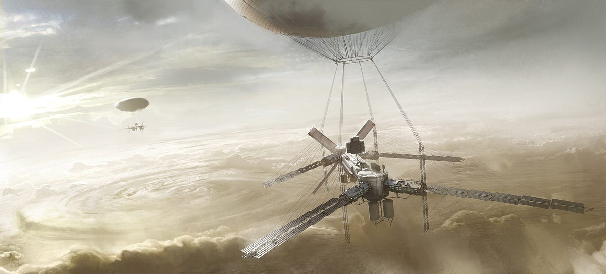

The Possibility of Colonizing Venus and How to Terraform It
The concept of a levitating colony
According to NASA research, the concept of an intra-atmospheric settlement using a mechanized craft has been proposed as a way for humans to explore Venus while avoiding the extreme conditions of the planet’s surface. The idea is to establish a levitating research station at an altitude of about 50 kilometers (30 miles) above Venus’ thick atmosphere. At this altitude, atmospheric pressure and temperature conditions similar to Earth’s exist, allowing for the possibility of human habitation.
Venus’ upper atmosphere provides an environment very similar to Earth’s. Specifically, it has a temperature range (30°C to 70°C or 86°F to 176°F) and atmospheric pressure similar to Earth’s surface, which led NASA scientists to envision the concept of a "floating research colony. Floating in acidic clouds about 30 miles above Venus’ atmosphere, the research station would be able to conduct research while being protected from the planet’s extreme conditions.
Terraforming approaches and challenges
Terraforming Venus is considered a very difficult task. The main challenge of terraforming Venus is removing its dense carbon dioxide atmosphere. The surface temperature of Venus averages 737 K (464 C), and the atmospheric pressure is 93 times that of Earth’s sea level. These extreme conditions make direct human habitation impossible.
Several approaches have been proposed for terraforming:
- Utilizing floating artificial surfaces: It has been proposed to build artificial surfaces in Venus’ upper atmosphere to enable more efficient terraforming.
- Removing the carbon dioxide atmosphere: Removing or modifying carbon dioxide from Venus’ atmosphere is considered a key step in terraforming.
- Introducing water: The introduction of water is an important step in the terraforming of Venus, and research is being conducted into the possibility that oceans may have existed on Venus in the past.
- Utilizing engineering technologies: The development of new space engineering technologies that can withstand extreme temperature and pressure conditions will be required.
Early research and future plans
NASA and ESA are planning several missions to explore Venus. NASA has approved two missions, VERITAS and DAVINCI, which are scheduled to launch after 2031. These missions will provide more detailed information about Venus’ atmosphere and surface, contributing to future terraforming and colonization efforts.
Venus has been identified as an important research target for understanding the origins of the solar system and Earth, how planetary bodies evolve from primitive states to the diverse objects they are today, and the development of habitable environments and conditions that lead to life.
The search for life and the possibility of life on Venus
Recent research has focused attention on the possibility of life in the upper atmosphere of Venus. At 30 miles (about 50 kilometers) above the surface, temperature and pressure conditions similar to those on Earth exist, and it is possible that extreme environment life, such as microorganisms, could survive at this altitude.
In 2020, the presence of phosphine gas in Venus’ atmosphere was reported, spurring discussion of the possibility of life, although subsequent studies have suggested that the signal could be explained by sulfides or other chemical processes. Still, the possibility of life in the upper layers of Venus’ atmosphere remains an important topic of research for the scientific community.
Benefits of floating cities in Venus’ upper atmosphere
Colonization in the Venusian atmosphere offers several unique advantages. On Earth, breathable air (a nitrogen/oxygen mixture) is heavier than a buoyant gas such as helium, but in Venus’ carbon dioxide-rich atmosphere, breathable air itself acts as a buoyant gas. The buoyancy of air on Venus is about 0.28 kg/m³, which means that its flotation ability on Venus is about half of the buoyancy provided by helium on Earth.
These properties offer innovative possibilities for habitable space design. The entire levitating envelope can be composed of breathable gas, meaning that the entire volume of the levitating body can be habitable space. For city-scale objects, this represents an enormous amount of flotation. A spherical envelope with a diameter of 1 km can lift 700,000 tons (about the weight of two Empire State Buildings), while a 2 km diameter envelope can lift 6 million tons.
And because there is no pressure difference between the inside and outside, even if the envelope suffers a major rupture, it will take thousands of hours for the gas to escape, giving you plenty of time to repair it. This is an important safety advantage over other planets like Mars or the Moon.
Advanced terraforming techniques
Additional terraforming methods are being investigated, including
- Solar Shades: It has been proposed to place a solar shield at Lagrange point L1 between Venus and the Sun to reduce the sun’s rays reaching the surface of Venus and cool the planet. This would lower the temperature of the planet, which could lead to the condensation or solidification of carbon dioxide in the atmosphere.
- Heat pipes to cool the atmosphere: This method, proposed by Paul Birch, involves accelerating planetary cooling by building “heat pipes” to transport heat from the planet’s surface to cooler regions in the upper atmosphere.
- Hydrogen introduction and the Bosch reaction: This method involves injecting hydrogen into Venus and utilizing the Bosch reaction, which reacts with carbon dioxide to produce elemental carbon (graphite) and water. The process requires about 4×10¹⁹ kg of hydrogen, which can be obtained from gas planets or their moons.
Venus vs Mars: Colonization comparison
Venus has some notable advantages over Mars when it comes to colonization:
- Gravity: Venus’ gravity is 90% of Earth’s, much higher than Mars’ 38%, which would likely be enough to prevent problems such as muscle weakness and reduced bone density in humans.
- Radiation protection: Venus’ thick atmosphere provides significant protection from cosmic radiation, and it doesn’t require additional radiation shielding like Mars or the Moon.
- Accessibility: Venus is the closest planet to Earth, so launch opportunities occur more frequently than Mars (every 584 days vs. every 780 days). Flight times are also shorter, with the Venus Express probe arriving in about five months, compared to nearly six months for the Mars Express.
- Proximity and energy: Because Venus is closer to the sun, it has an abundance of solar energy, and solar arrays can produce nearly the same power when pointed downward toward reflective clouds as when facing the sun.
Practical implementation plans and long-term vision
NASA’s Langley Research Center examined atmospheric habitats for human exploration in a detailed study called the High Altitude Venus Operational Concept (HAVOC). This initial human mission envisioned a 129-meter-long airship designed to support a two-person crew for 30 days at an altitude of 50 kilometers.
This design study included analyzing how such a vehicle would enter the Venusian atmosphere and deploy to an operational altitude, as well as an ascent vehicle that would launch the crew from the atmosphere into Venusian orbit. In the long term, the HAVOC design was intended as a starting point with the potential to evolve for longer missions and eventually sustained habitation.
The surface area of Venus’s atmosphere is 3.1 times the land area of Earth, so there’s plenty of room: billions of habitats, each home to hundreds of thousands of humans, could float in Venus’s atmosphere without overcrowding the space.